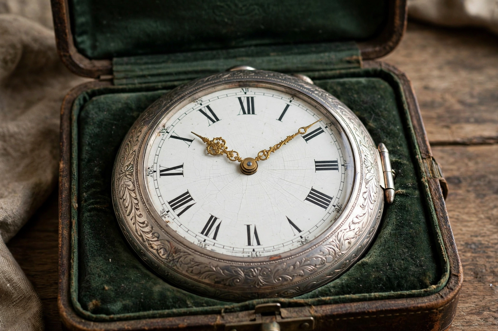

Wikipedia — the free encyclopedia
| Type | Precision ship's timekeeper |
| Purpose | Carrying reference-meridian time for longitude |
| Pioneer | John Harrison (H4, 1759) |
| Accuracy needed | ≈ 3 seconds of time error per day or better |

Harrison's H4, the first successful marine timekeeper (1759).
A marine chronometer is a precision timekeeper carried aboard ship to preserve the time of a reference meridian — historically Greenwich Mean Time. Comparing that time with local time, found from the Sun's meridian passage, yields the ship's longitude at 15 degrees per hour of difference. Because four seconds of time error mean a nautical mile of position error at the equator, chronometers had to keep time to within a few seconds a day despite a rolling ship, heat, cold and humidity.
The instrument grew from John Harrison's H4 of 1759, proven on Atlantic trials in the 1760s and retold in the history of longitude. Simplified and cheapened by makers such as John Arnold and Thomas Earnshaw, chronometers became standard naval equipment through the nineteenth century.
Classic marine chronometers are mounted in gimbals inside a brass bowl in a protective box, so the movement stays level as the ship rolls. Their design centres on a temperature-compensated balance wheel and a detent escapement, wound at the same time each day. Ships typically carried three, so that no two could fail or drift together unnoticed. Time signals — the Greenwich time ball, dropped daily from 1833 — let ships in port rate their chronometers, a ritual later replaced by radio time signals and finally by satellite navigation, though chronometers are still carried as a backup.
John Harrison · History of longitude · Greenwich Mean Time · Navigation